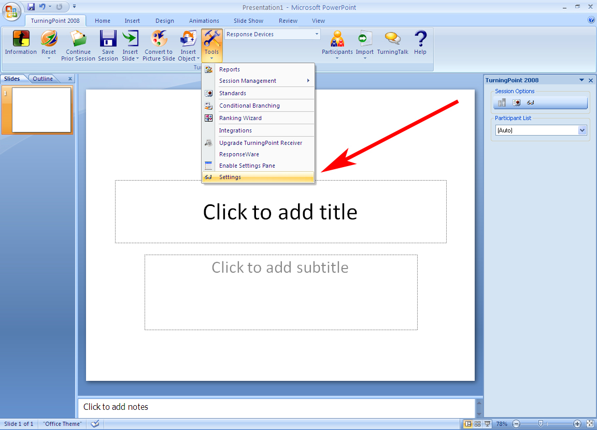
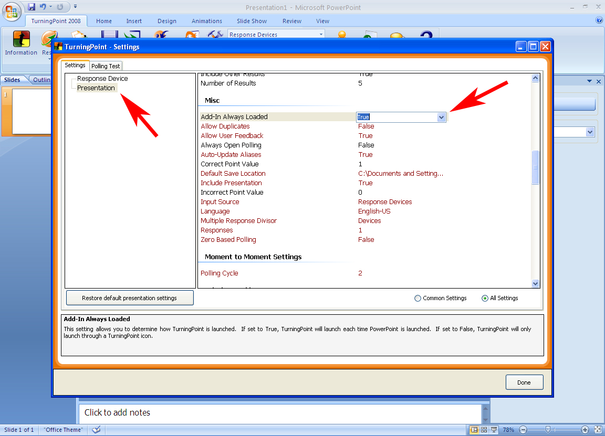

Make the Turning Point Tab appear when you open PowerPoint
By default the TurningPoint Tab will only appear when the TurningPoint icon is clicked or when a TurningPoint presentation is opened directly from your browser. If you were to open PowerPoint you would not be able to access any of the TurningPoint functions. The program defaults can be configured to have the TurningPoint’s tab load every time you open any files associated with PowerPoint.
- Open Turning Point by clicking on the Turning Point icon.
- From the “Turning Point 2008” tab, click on the “Tools” icon.
- Scroll down to “Settings” and select it.
`

- In “Settings”, make sure that “Presentation” is selected.
- Scroll down to the “Misc” section.
- The first item is “Add-in always loaded” – set this to “True” and click “Done” button in the bottom right hand corner.
